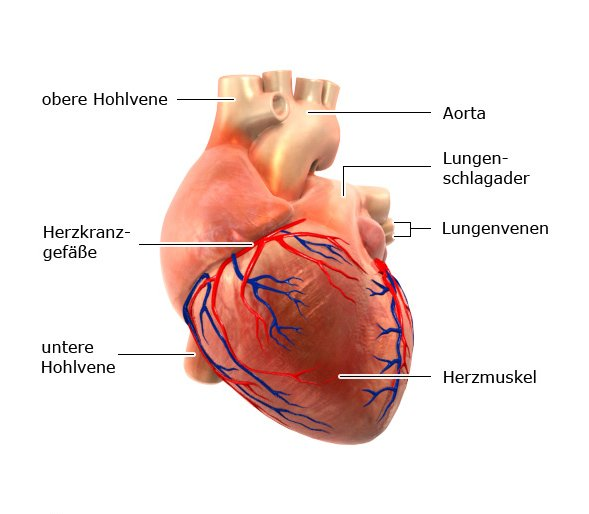

Herz
Unser Herz pumpt pro Minute rund fünf bis sechs Liter Blut durch den gesamten Körper – so wird jede einzelne Zelle mit Sauerstoff und Nährstoffen versorgt. Das muskuläre Hohlorgan funktioniert als Druck- und Saugpumpe1. Es liegt hinter dem Brustbein oberhalb des Zwerchfells, eingebettet zwischen den beiden Lungenflügeln. Der Aufbau des Herzens ähnelt einem Dreieck mit nach unten zeigender und abgerundeter Spitze. Ein gesundes Herz ist etwa 15 Zentimeter lang und 10 Zentimeter breit. Es wiegt beim Erwachsenen durchschnittlich 300 bis 350 Gramm.
Aufbau des Herzens
Die Anatomie des Herzens spielt eine wichtige Rolle, damit das Organ seine lebenswichtige Funktion erfüllen kann. Das Herz lässt sich in eine linke und rechte Hälfte unterteilen. Jede Herzhälfte verfügt über einen Vorhof und eine Herzkammer. Zwischen beiden Herzhälften verläuft in Längsrichtung die sogenannte Herzscheidewand, das Septum. Es trennt den rechten vom linken Vorhof sowie die rechte von der linken Herzkammer
In jeder Herzhälfte befindet sich zwischen Vorhof und Kammer eine sogenannte Segelklappe. Sie trägt ihren Namen aufgrund ihrer segelartigen Struktur. Die rechte Herzklappe besteht aus drei Segeln und heißt Trikuspidalklappe (tri = drei, cuspis = Segel). Die linke Klappe verfügt über zwei segelförmige Strukturen und nennt sich auch Bikuspidal- oder Mitralklappe (Mitra = Bischofsmütze). Die Klappen des Herzens übernehmen die Funktion von Rückschlagventilen: Sie sorgen dafür, dass das Blut im Herzen nur in eine Richtung fließen kann. Zudem gibt es die taschenförmig angelegten Taschenklappen: Am Übergang von rechter Herzkammer zu Lungenarterie befindet sich die Pulmonalklappe. Sie verhindert, dass Blut in die rechte Herzkammer zurückfließen kann. Die Aortenklappe am Übergang von linker Herzkammer in die Hauptschlagader (Aorta) stellt sicher, dass das Blut nicht in die linke Herzkammer zurückfließt.
Funktion des Herzens
Das Herz bildet das Zentrum des Herz-Kreislauf-Systems und verbindet den sogenannten Lungen- mit dem Körperkreislauf. Durch seinen Aufbau ist das Herz optimal an seine Hauptaufgabe angepasst: Es pumpt beständig Blut durch den Körper und gewährleistet so, dass die Organe ausreichend mit Sauerstoff versorgt sind. Das Herz eines gesunden Erwachsenen schlägt etwa 70-mal in der Minute und fördert pro Herzschlag rund 70 Milliliter. Ein kompliziertes Erregungsleitungssystem steuert die Funktion des Herzens. Jede Pumpbewegung beginnt mit einem elektrischen Impuls, der zur Anspannung des Herzmuskels nötig ist. Dieser Impuls wird im Sinusknoten im rechten Vorhof erzeugt. Von hier breiten sich die elektrischen Impulse im Erregungsleitungssystem entlang der Vorhöfe und Kammern bis zur Herzspitze aus.
Wikipedia lesen